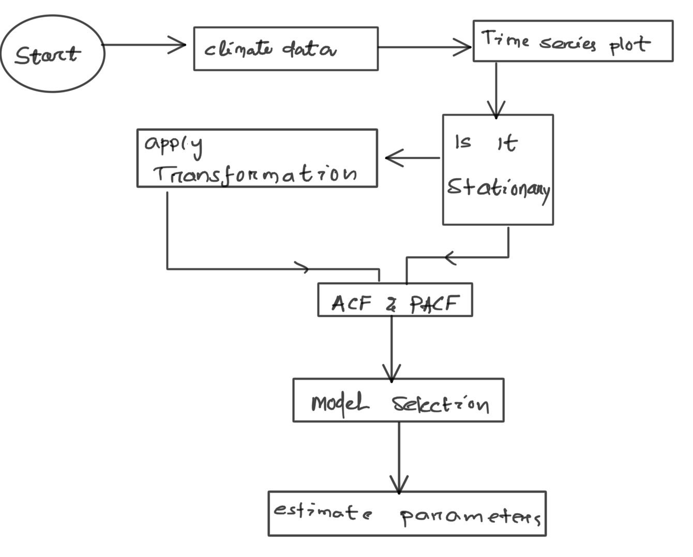
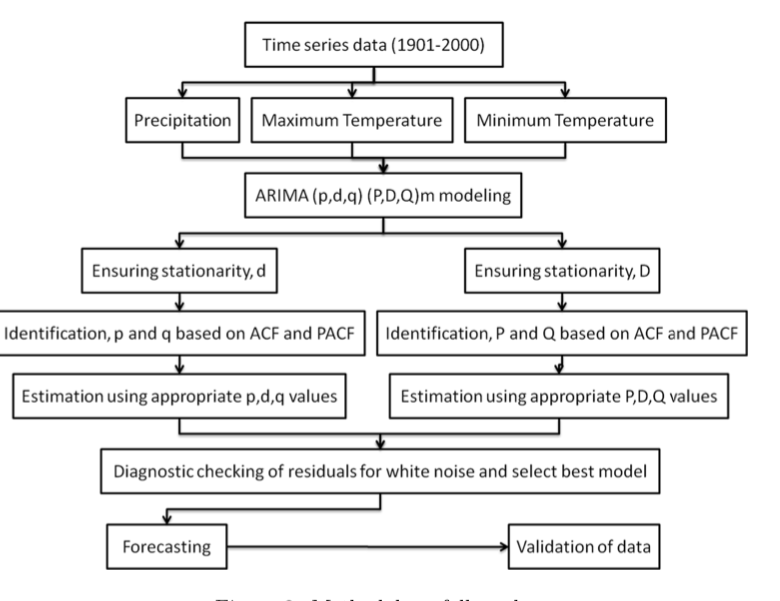
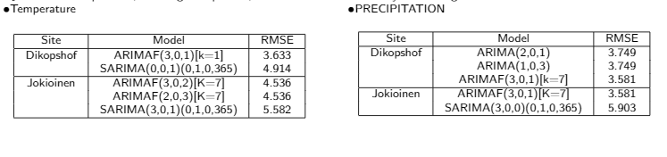

Review of Research Papers That we read for our project:
- PAPER 1:
ARIMA based daily weather forecasting tool: A case study for Varanasi,
by - NIKITA SHIVHARE, ATUL KUMAR RAHUL, SHYAM BIHARI DWIVEDI and
PRABHAT KUMAR SINGH DIKSHIT.
link
-
Varanasi:65 Years of daily meteorological data (rainfall,mintemp ,max temp) from IMD
- (1951-1995):Training set ,monitoring.(1995-2015)validatingset,testing
- They worked out ARIMA(2,0,2) for rainfall and ARIMA(2,1,3) for temperature data.With root mean squared
error values 0.0948 and 0.085 for rainfall data and temperature data respectively.
This accuray shows that their algorithm worked successfully.

-
PAPER 2: Time series analysis of climate variables using seasonal
ARIMA approach, by -TRIPTI DIMRI , SHAMSHAD AHMAD and MOHAMMAD SHARIF
link
- Time series and seasonal analysis of monthly mean minimum and maximum
Temperature and the precipitation for Bhagirathi River basin(Uttarkashi and Teheri)
- Box -jenkins approach to find a good model for forecasting

- Their result :for-Precipitation :SARIMA(0,1,1)(0,1,1,12) and for
Temperature:SARIMA(0,1,0)(0,1,1,12)
- The forecast result for precipitation were found to overpredict for extreme rainfall
events(For both Below and above normal precipitation). That's why they got high RMSE even thoughin normal rainfall
days the forecast and observed data do agree.
- Forecast result for temperature in good agreement.
Increasingtrend for Teheri station(767 m) and Decreasing trend for Uttarkashi station(1071 m).
-
PAPER 3: Forecasting daily meteorological time series using ARIMA and regression models,
by - Małgorzata Murat, Iwona Malinowska, Magdalena Gos, and Jaromir Krzyszczak
link
- Box-Jenkins approach.
- ARIMA with an external regressors in the form of Fourier Terms.
These would allow seasonal parameters to added to the Data.The Model looks like as follows:ARIMAF(p,d,q)[K]

Stationarity of data And its Importance:
Stationarity is a statistical property
-
Constant mean
-
Constant Variance
- No Seasonality
- Repeating trend or pattern over time
To convert a Non-Stationary Data into Stationary.There are different ways to kill Non-Stationarity of different types.
-
Differencing , when Y(t) is following a linear trend.Y(t)=Y(t)-Y(t-1)
-
Sometime we need to do multiple time Differencing.
- Sometimes we take Y(t)=LOG(Y(t)) in case where Y(t) is ofexponential type forms.
- Seasonal differencing Y(t)=Y(t)-Y(t-1)
Stationarity of data And its Importance:
Stationarity is a statistical property
-
Constant mean
-
Constant Variance
- No Seasonality
- Repeating trend or pattern over time
To convert a Non-Stationary Data into Stationary.There are different ways to kill Non-Stationarity of different types.
-
Differencing , when Y(t) is following a linear trend.Y(t)=Y(t)-Y(t-1)
-
Sometime we need to do multiple time Differencing.
- Sometimes we take Y(t)=LOG(Y(t)) in case where Y(t) is ofexponential type forms.
- Seasonal differencing Y(t)=Y(t)-Y(t-1)
Relevant paper:
-
ARIMA based daily weather forecasting tool: A case study for Varanasi,
by - NIKITA SHIVHARE, ATUL KUMAR RAHUL, SHYAM BIHARI DWIVEDI and
PRABHAT KUMAR SINGH DIKSHIT.
link
-
Time series analysis of climate variables using seasonal
ARIMA approach, by -TRIPTI DIMRI , SHAMSHAD AHMAD and MOHAMMAD SHARIF
link
-
Forecasting daily meteorological time series using ARIMA and regression models,
by - Małgorzata Murat, Iwona Malinowska, Magdalena Gos, and Jaromir Krzyszczak
link